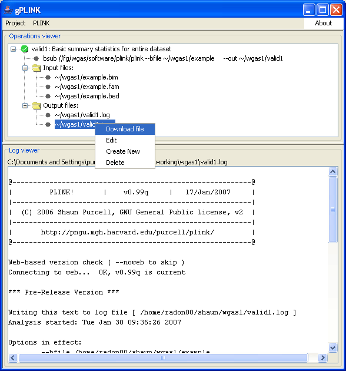

|  |
Viewing output filesBecause we are running remotely, all the output files are on the remote machine, not the local machine. gPLINK is aware of this, and so if you right-click on a file that only exists on the remote machine, the first option will be to download that file, from the remote machine to make a copy in the local project folder.Previous | Next |